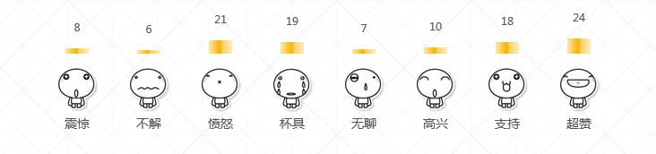

一个PHP+Ajax实现文章心情投票功能实例，可以学习了解实现投票的基本流程：通过ajax获取心情图标及柱状图相关数据，当用户点击其中的一个心情图标时，向Ajax.php发送请求，PHP验证用户cookie防止重复提交，然后将mysql中对应的数据心情字段内容加1，成功后返回前端页面，并更新柱状图和统计数据。

发表心情：
1 $id = (int)$_POST['id']; //文章或帖子id
2 $mid = (int)$_POST['moodid']; //心情id（配置文件中提供8种心情）
3 if(!$mid || !$id){
4 echo "此链接不存在";exit;
5 }
6
7 $havemood = chk_mood($id); //验证cookie
8 if($havemood==1){
9 echo "您已经表达过心情了，保持平常心有益身心健康！";exit;
10 }
11 $field = 'mood'.$mid; //数据表中的心情字段，分别用mood0，mood1，mood2...表示不同的心情字段
12 $query = mysql_query("update mood set ".$field."=".$field."+1 where id=".$id); //对应的心情字段值+1
13 if($query){
14 setcookie("mood".$id, $mid.$id, time()+300); //设置cookie，为了测试我们设置cookie过期时间为300s
15 $query2 = mysql_query("select * from mood where id=$id");
16 $rs = mysql_fetch_array($query2);//获取该文章的心情数据
17 $total = $rs['mood0']+$rs['mood1']+$rs['mood2']+$rs['mood3']+$rs['mood4']+$rs['mood5']+
18 $rs['mood6']+$rs['mood7'];
19 $height = round(($rs[$field]/$total)*$moodpicheight); //得到总量，并计算当前对应心情的柱状图的高度
20 echo $height; //返回当前心情柱状的高度
21 }else{
22 echo -1; //数据出错
23 }
获取心情：
1 $mname = explode(',',$moodname);//心情说明
2 $num = count($mname);
3 $mpic = explode(',',$moodpic);//心情图标
4
5 $id = (int)$_GET['id']; //文章或帖子id
6 $query = mysql_query("select * from mood where id=$id"); //查询对应的心情数据
7 $rs = mysql_fetch_array($query);
8 if($rs){
9 //得到发表心情的总量
10 $total = $rs['mood0']+$rs['mood1']+$rs['mood2']+$rs['mood3']+$rs['mood4']+
11 $rs['mood5']+$rs['mood6']+$rs['mood7'];
12 for($i=0;$i<$num;$i++){
13 $field = 'mood'.$i; //字段名
14 $m_val = intval($rs[$field]); //心情对应的值（次数）
15 $height = 0; //柱图高度
16 if($total && $m_val){
17 $height=round(($m_val/$total)*$moodpicheight); //计算高度
18 }
19
20 $arr[] = array(
21 'mid' => $i, //对应心情id
22 'mood_name' => $mname[$i], //心情名称
23 'mood_pic' => $mpic[$i], //图标
24 'mood_val' => $m_val, //次数
25 'height' => $height //柱状图高度
26 );
27 }
28 echo json_encode($arr); //返回JSON数据
29 }
获取心情列表信息，并展示在页面中：
1 $(function(){
2 $.ajax({
3 type: 'GET', //通过get方式发送请求
4 url: 'ajax.php', //目标地址
5 cache: false, //不缓存数据，注意文明发表心情的数据是实时的，需将cache设置为false，默认是true
6 data: 'id=1', //参数，对应文章或帖子的id，本例中固定为1，实际应用中是获取当前文章或帖子的id
7 dataType: 'json', //数据类型为json
8 error: function(){
9 alert('出错了！');
10 },
11 success: function(json){ //请求成功后
12 if(json){
13 $.each(json,function(index,array){ //遍历json数据列
14 var str = "<li><span>"+array['mood_val']+"</span><div class=\"pillar\"
15 style=\"height:"+array['height']+"px;\"></div><div class=\"face\"
16 rel=\""+array['mid']+"\"><img src=\"images/"+array['mood_pic']+"\">
17 <br/>"+array['mood_name']+"</div></li>";
18 $("#mood ul").append(str); //将数据加入到#mood ul列表中
19 });
20 }
21 }
22 });
23 ...
24 });
数据库表建立直接运行以下代码：
1 CREATE TABLE IF NOT EXISTS `mood` (
2 `id` int(11) NOT NULL,
3 `mood0` int(11) NOT NULL DEFAULT '0',
4 `mood1` int(11) NOT NULL DEFAULT '0',
5 `mood2` int(11) NOT NULL DEFAULT '0',
6 `mood3` int(11) NOT NULL DEFAULT '0',
7 `mood4` int(11) NOT NULL DEFAULT '0',
8 `mood5` int(11) NOT NULL DEFAULT '0',
9 `mood6` int(11) NOT NULL DEFAULT '0',
10 `mood7` int(11) NOT NULL DEFAULT '0',
11 PRIMARY KEY (`id`)
12 ) ENGINE=MyISAM DEFAULT CHARSET=utf8;
13
14
15 INSERT INTO `mood` (`id`, `mood0`, `mood1`, `mood2`, `mood3`, `mood4`, `mood5`, `mood6`, `mood7`)
16 VALUES(1, 8, 6, 20, 16, 6, 9, 15, 21);
本文转自：https://www.sucaihuo.com/php/155.html 转载请注明出处！